From Idea to MVP
Building a Prototype That Proves Your Value
Algef Almocera
- 20+ years building software
- CTO, Narsima Technologies
- Ex-Director of Engineering, New York
"I have watched more than a hundred products get built.
The teams that succeeded knew exactly what to build."
How Today Works
- I walk you through one sprint step at a time
- Your team applies it to YOUR product, immediately
- When the timer appears, you work
You leave with a better approach to what you build
Raise your hand if your team knows EXACTLY what you will demo.
Keep it up if you could show me the screens right now.
01 The Problem
The Hackathon Trap
Let me guess your feature list:
...and buried somewhere in there,
THE ACTUAL IDEA
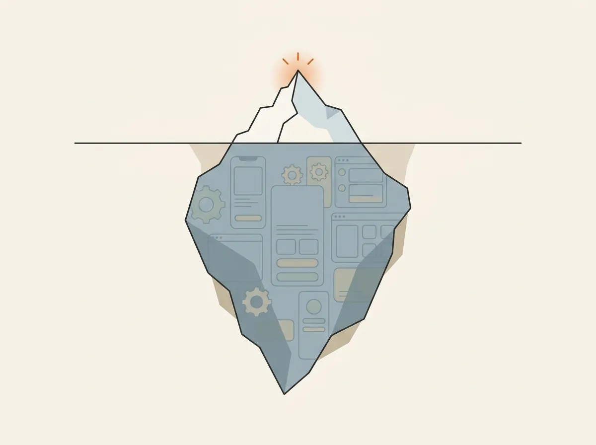
What you imagine: underwater. What you can build: the tip.
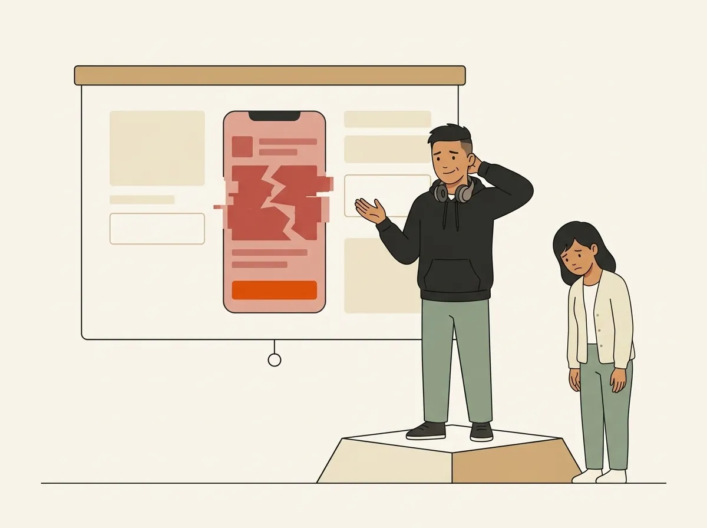
90% of the time goes to plumbing.
The demo becomes an apology:
"Sorry, this part is not working yet."
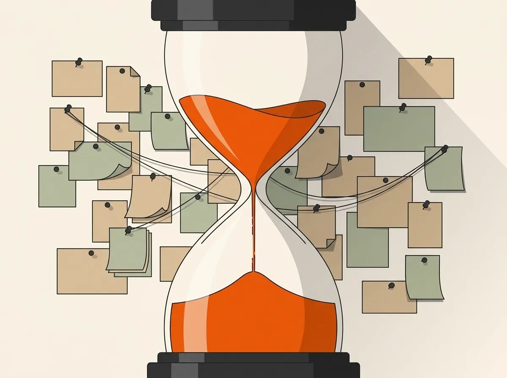
Your enemy is not a missing feature.
Your enemy is THE CLOCK and unproven assumptions.
The Three Levers
This whole afternoon is about
moving it well.
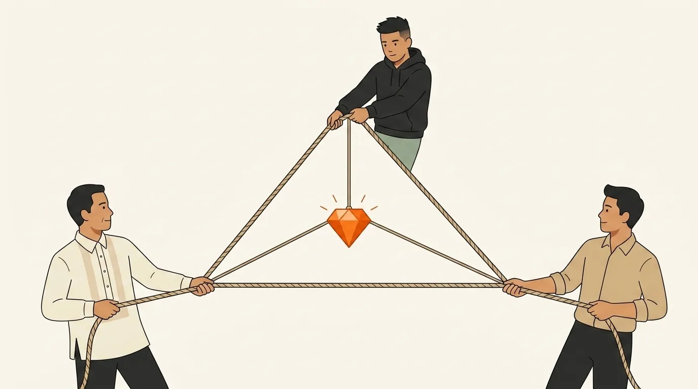
Fifteen features do not fit
between now and demo day.
ONE PROVEN FLOW DOES.
02 Foundations
Two Words That Decide
What You Build
PROTOTYPE
a visual or interactive model to test design and user flow
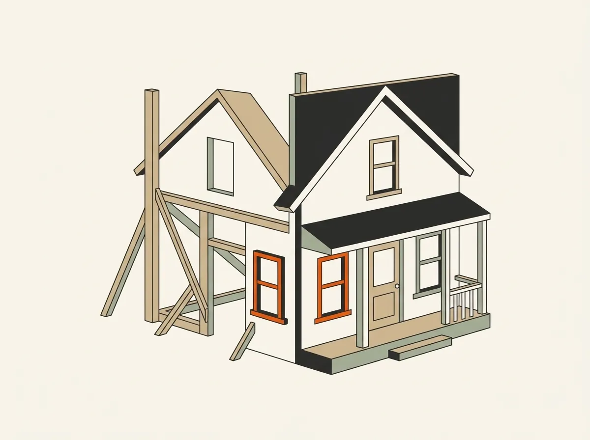
Looks real from the front. Not a real house.
That is the point.
MVP
A functional version of your product,
released to real users to test demand.
Prototype vs MVP: Key Differences
| PROTOTYPE | MVP | |
|---|---|---|
| Purpose | validates design, usability, and the concept | validates real user adoption |
| Functionality | a mockup or simulation, no real backend | a working product with essential core features for real-world use |
| Audience | your team, mentors, judges | real early users |
| Time and cost | days, almost free | weeks or months, real engineering |
PROTOTYPE: tests your design.
It helps you answer questions faster.
MVP: tests your demand.
It gives real users real value.
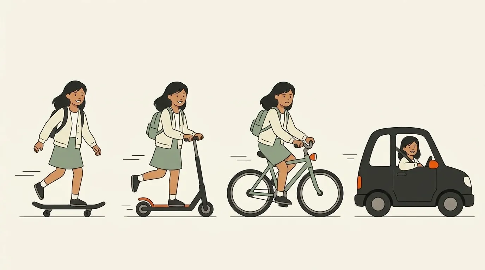
Every step is USABLE. Not one wheel of a future car.
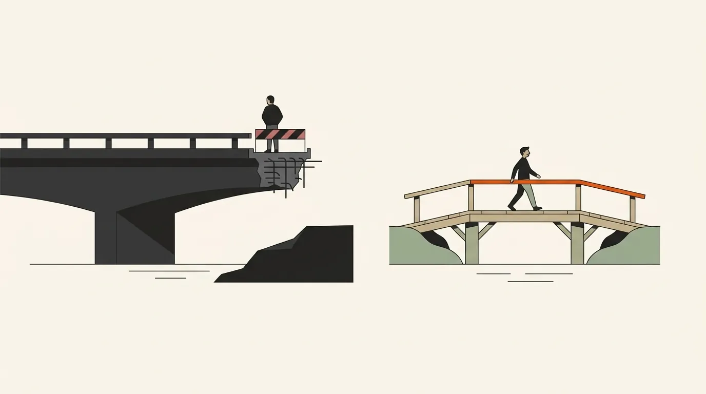
Half a bridge helps no one.
A small complete footbridge crosses.
For THIS Hackathon
A clickable prototype, or
a functional demo of ONE flow
= a winning outcome.

03 The Machine
The Design Sprint
Five days at Google. One afternoon here.
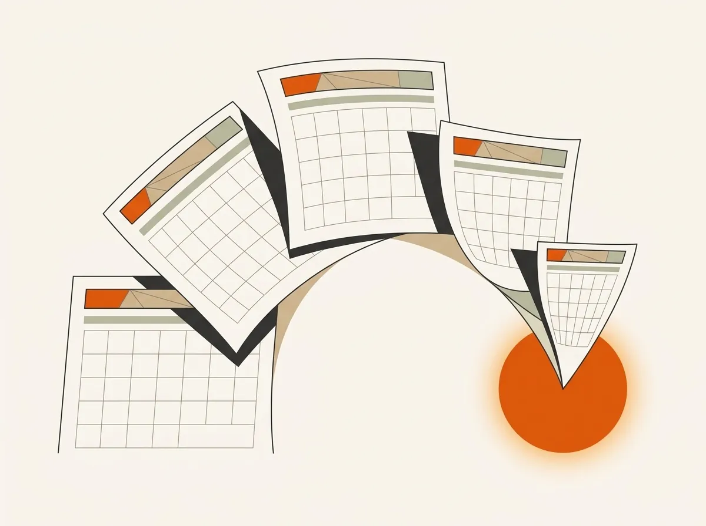
A deadline plus a fixed order
kills endless debate.
You do not argue. You build and test. The user decides.
Meet CanteenGo
our practice product for today
The problem: students lose 20 of their 30 break minutes in the canteen line.
The idea: pre-order your food, get notified, walk over, pick it up.
I demo every step on CanteenGo.
Your team runs it on YOUR product.
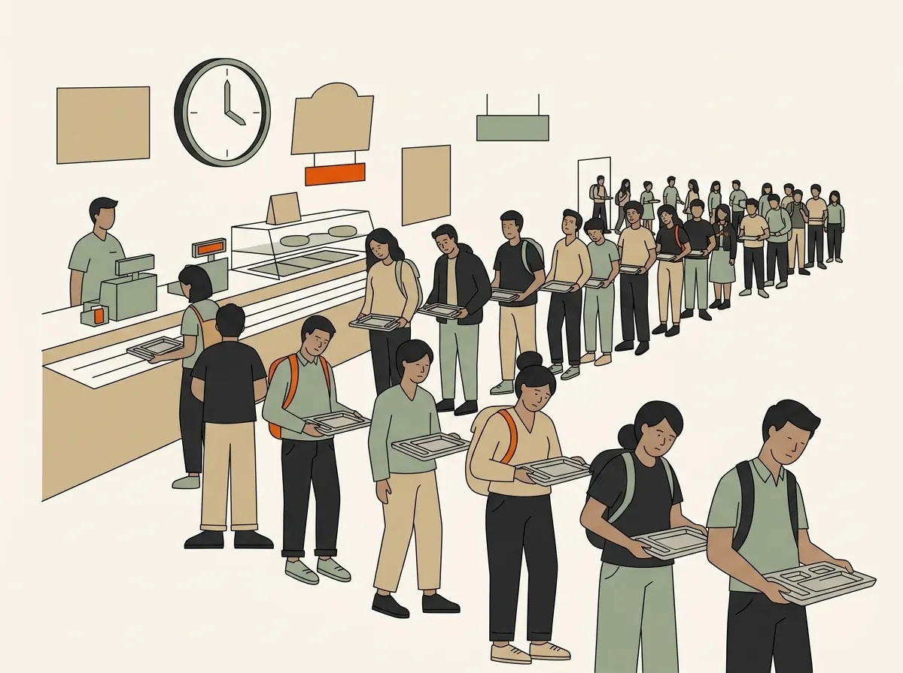
Sprint Step 1
UNDERSTAND & MAP
The challenge, the goal, the questions. Then the journey.
CanteenGo: Understand First
CHALLENGE
Students lose 20 of their 30 break minutes standing in the canteen line, while canteen staff struggle with chaotic peak-hour rushes.
GOAL
This school year: every student gets their food with less than 5 minutes of waiting.
SPRINT QUESTIONS
1. Will students pre-order before break instead of deciding in line?
2. Can canteen staff handle app orders and the walk-up line at the same time?
3. Will students trust the ready notification, or still crowd the pickup counter?
CanteenGo: Who Are We Building For?
MIKA, student
Goals: order in seconds before break, skip the line, know the moment food is ready
Pains: 20 of 30 minutes in line, favorite dish sold out on arrival, late back to class
Tech: expert phone user
NENA, canteen staff
Goals: steady order flow, no more shouting order numbers, mark sold-out dishes fast
Pains: paper ticket chaos, noisy pickup counter, uncollected orders
Tech: can use a simple tablet
MR. SANTOS, admin
Goals: shorter lines, safer canteen at peak break, happier students
Pains: overcrowding, student complaints, no view of canteen operations
Tech: reads simple reports
Your core value sentence names ONE of these. Design for them first.
to [DO ONE THING]
so that [BENEFIT].
The User Journey
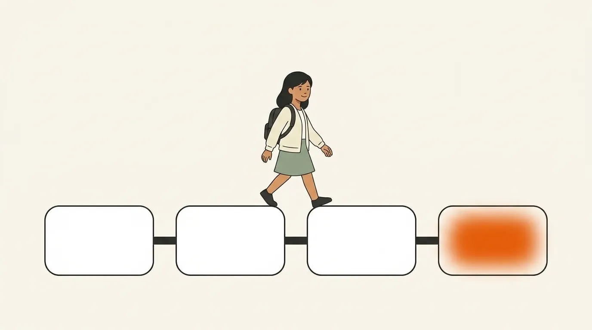
If only ONE thing works on demo day,
it is this line.
- Your challenge and goal, one line each
- Your core value: one sentence (use the template)
- Your journey: 3 to 6 boxes, straight line
One sheet of paper. Everyone contributes.
GO
Sprint Step 2
SKETCH & IDEATE
Ugly is correct.
CanteenGo: How Might We
HOW MIGHT WE...
1. HMW let students order in seconds, not minutes?
2. HMW tell a student their food is ready without them waiting at the counter?
3. HMW help staff manage app orders without slowing the walk-up line?
CORE SOLUTION SKETCHES
One-Tap Menu: today's dishes as big photo cards, two taps to order
Ready Board + Ping: order number on a big screen, plus a phone notification
Staff Queue Tablet: all orders in one list, one tap to mark ready
Each sketch answers a question.
The journey stays the same: browse, order, notified, pick up.
What the Sketches Could Become
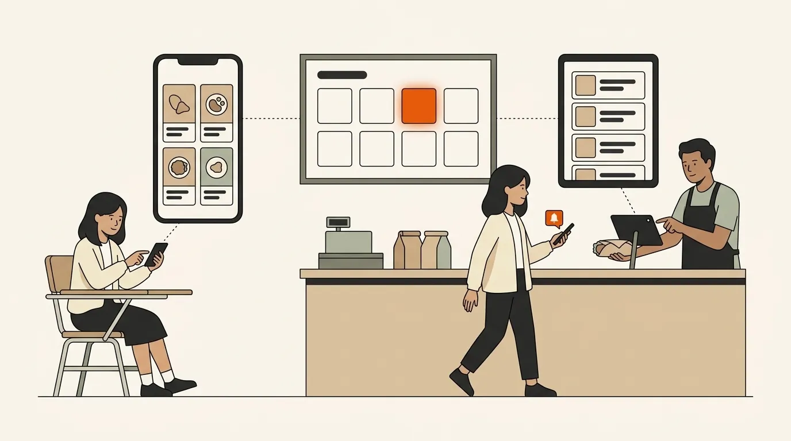
One-Tap Menu · Ready Board + Ping · Staff Queue Tablet: one journey, working together
WIREFRAME
a skeleton of a screen
Boxes. Labels. Nothing else.
If you can draw a box,
you can wireframe.
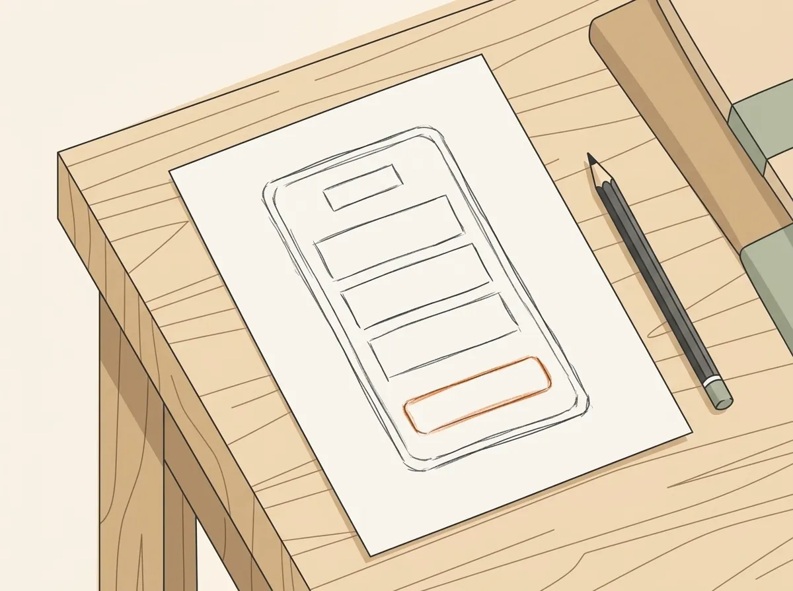
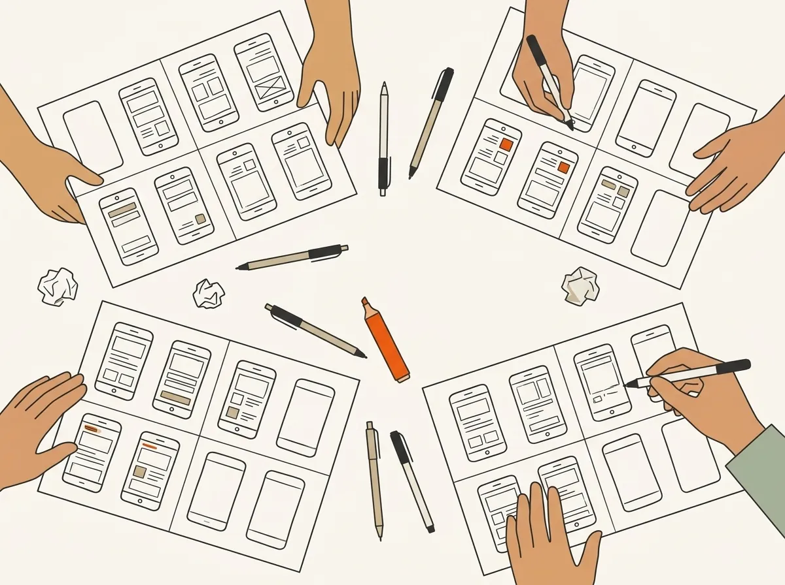
UGLY IS CORRECT.
Nobody defends an ugly sketch. So the team argues about the IDEA.
- Write 2 or 3 How Might We questions from your challenge
- Fold your paper: one panel per journey box
- Sketch each step as one rough screen, boxes and labels only
If your sketch looks good, you are going too slow.
GO
Sprint Step 3
DECIDE & STORYBOARD
The line that saves your demo.
For every feature, ask:
"If this disappeared, does the core value still work?"
NO = must-have
YES = nice-to-have
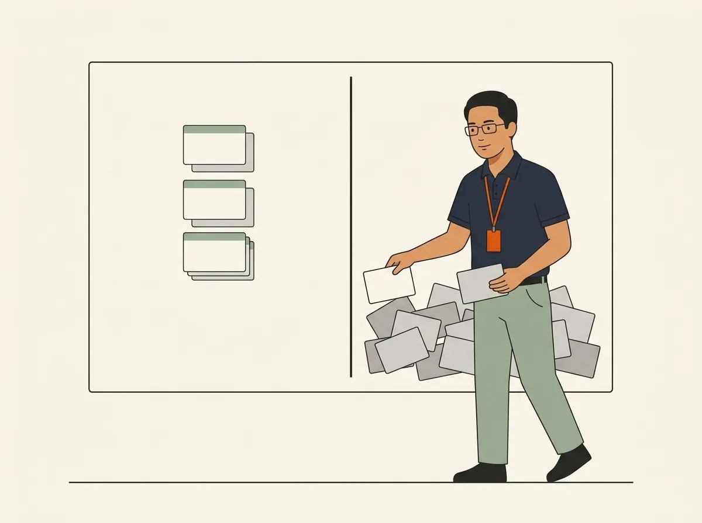
CanteenGo: Keep or Later?
orange dot: from a sketch · gray dot: from the list you walked in with
Build in journey order. That row is your storyboard.
Almost Always LATER
at a hackathon
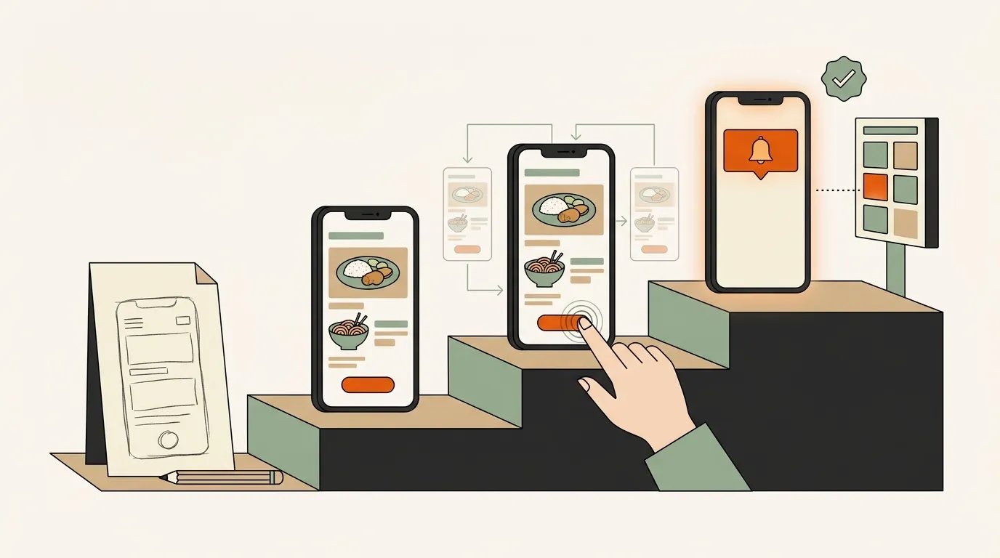
Wireframe › Mock-up › Clickable prototype › Functional demo
Build the LOWEST fidelity that answers
your CURRENT question.
Never code what a click can answer.
The Tools (all free)
| Rung | Tools |
|---|---|
| Wireframe | pen and paper, whiteboard, Excalidraw, Balsamiq |
| Mock-up | Figma (free for students), Canva |
| Clickable | Figma prototype mode, Marvel POP (photo your paper sketches!) |
| Functional | Glide, Softr, Bubble · AIDA, v0, Lovable, Bolt, Replit, Claude · your own stack |
Tools change every year. The ladder and the rule are forever.
- List every feature
- Disappearing test on each: draw your MVP line
- Order the keepers in journey order: your storyboard
- Pick your demo-day format, and write the question it will answer
Be brutal. Your Friday self will thank you.
GO
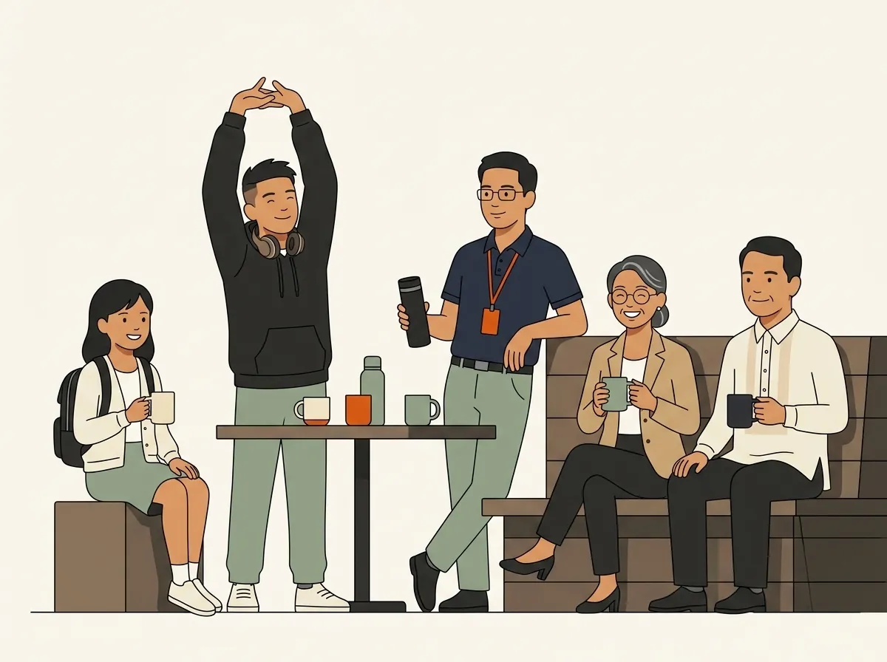
Stretch. Back when the timer hits zero.
One Real Feature List,
Cut Live
Watch the METHOD, not the product.
Sprint Step 4
PROTOTYPE
One complete thread.
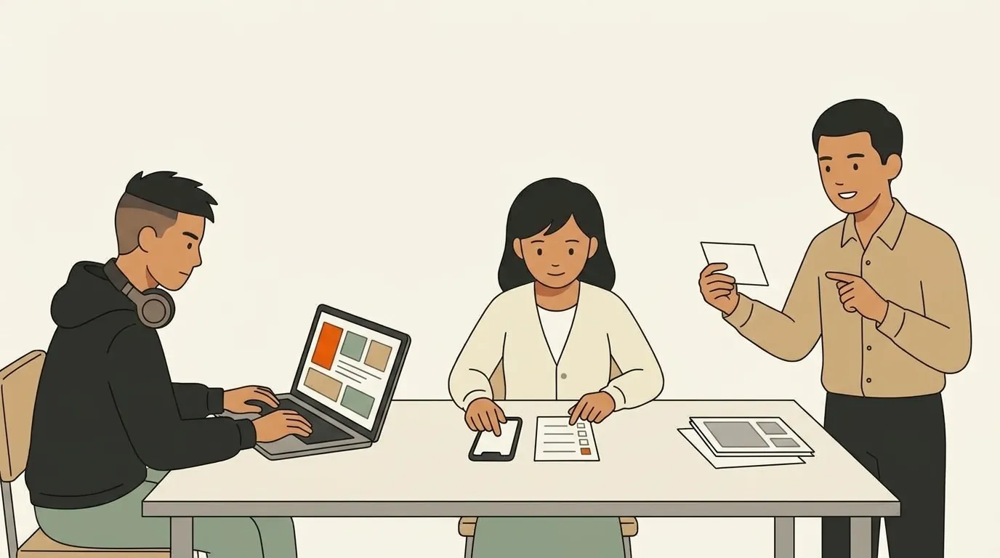
One builds. One preps the user test. One drafts the demo script.
- Screens, in order
- Who builds what
- What gets FAKED (list it honestly)
- Timebox per task, in minutes
This paper is your schedule for tomorrow.
GO
Sprint Step 5
TEST
Silence is data.
Hesitations. Wrong taps.
THAT face.
Ask: "What did you expect to happen?"
Never: "Did you like it?"
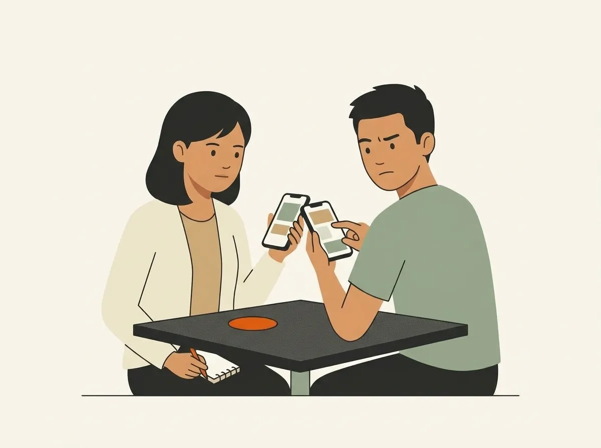
One Volunteer. One Task.
Watch the hands. Watch the face.
When Your Prototype Is Ready: Run This
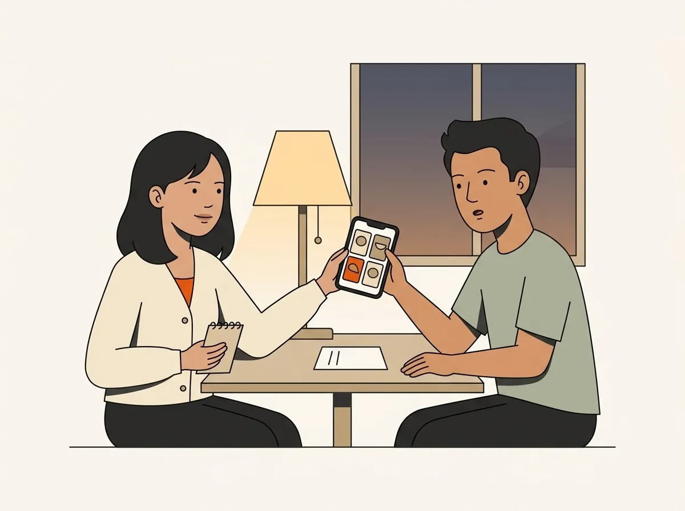
Your team just ran
a DESIGN SPRINT.
Now: what do you do with what you saw?
Feedback Is a To-Do List,
Not a Verdict
- 3 of 3 stuck on one step = SIGNAL. Fix it now.
- 1 person dislikes a color = noise. Park it.
- One change per iteration. Then test again.
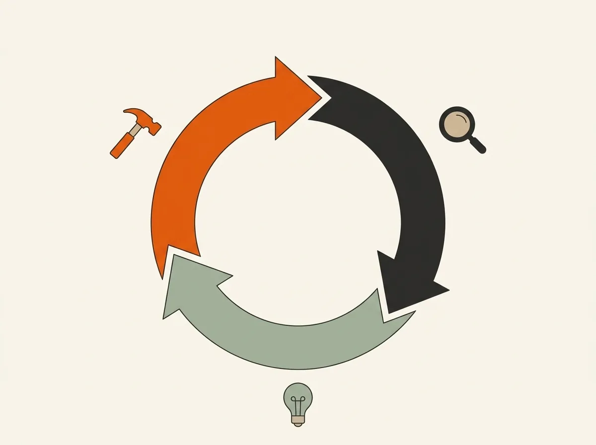
This loop is the career skill.
Today you learned the turn. Tonight you run it.
04 The Payoff
What You Now Hold
Not notes. A finished design sprint.
Tomorrow: mentors help you
with the PITCH.
Your prototype is the PROOF
inside that pitch.
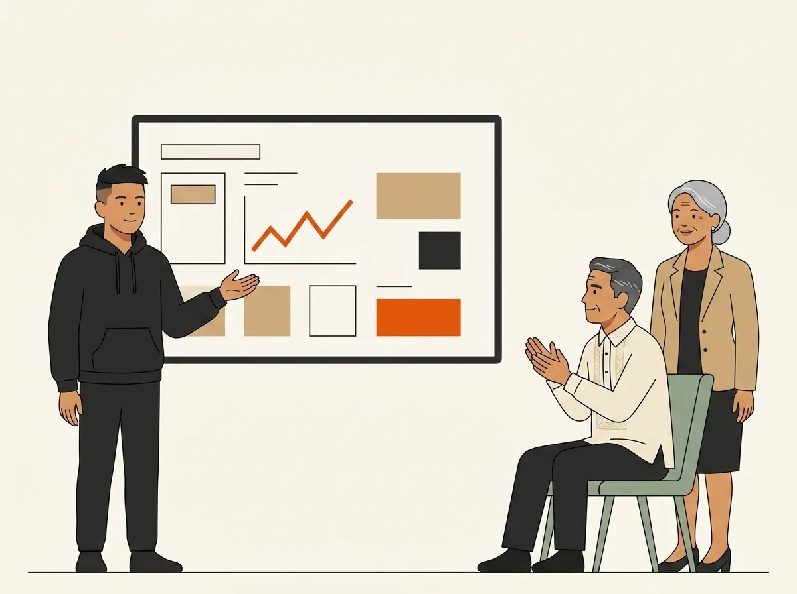
The Judges' Scorecard
| Criteria | Weight | You already did this |
|---|---|---|
| Relevance | 15% | your challenge, goal, and target users (Understand & Map) |
| Innovation & Creativity | 25% | your How Might We solution sketches (Sketch & Ideate) |
| Feasibility & Practicality | 25% | your MVP line and storyboard (Decide & Storyboard) |
| Viability & Sustainability | 20% | your LATER list is the growth path; your test proves demand |
| Presentation & Communication | 15% | your 5-minute pitch and 1-minute demo, polished at pitch prep tomorrow |
Half the score is originality plus realistic scope.
Nobody scores feature count.
Your Pitch on Demo Day: 5 + 1 + 5
Sixty seconds of demo. One flow is ALL that fits.
You scoped for exactly this today.
Same Fact. Different Frame.
"Sorry, this part is not working yet."
"We focused on proving the core value first."
Judges fund discipline.
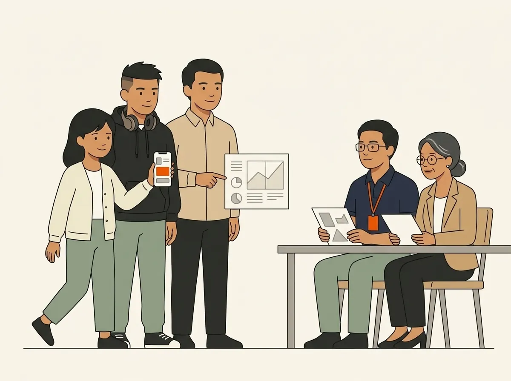
The winning team is rarely the one that built the most.
It is the one that PROVED the most with the least.
On one small paper:
- The ONE flow you will have WORKING by demo day
- Your chosen format
Everyone signs. Photo. Pin it in the group chat.
GO
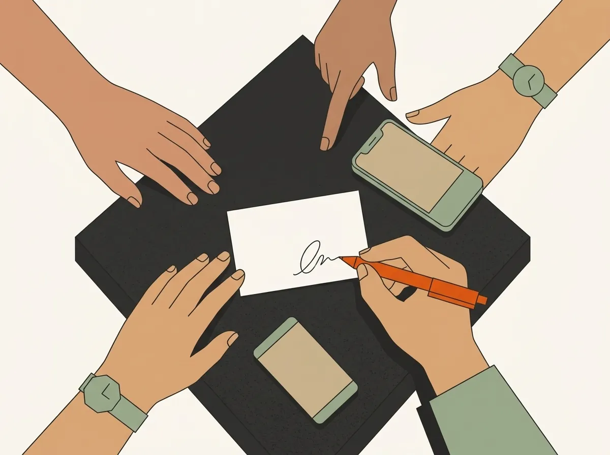
PROTOTYPE: tests your design. MVP: tests your demand.
Questions?
Anything goes: your product, your scope, careers, war stories.

Thank You
Now go prove your value.